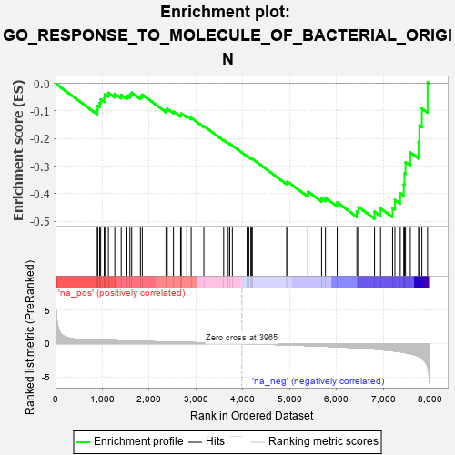
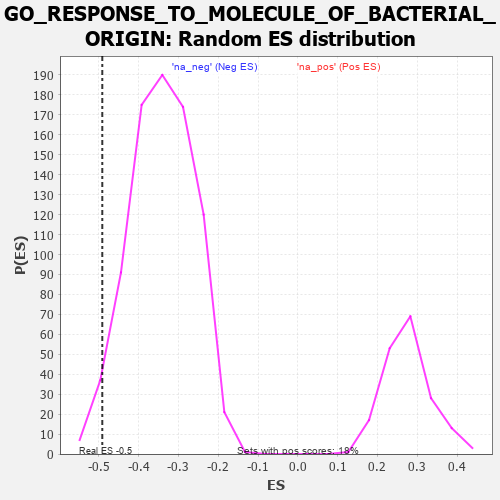

| | | Dataset | 7d |
| Phenotype | NoPhenotypeAvailable |
| Upregulated in class | na_neg |
| GeneSet | GO_RESPONSE_TO_MOLECULE_OF_BACTERIAL_ORIGIN |
| Enrichment Score (ES) | -0.49120793 |
| Normalized Enrichment Score (NES) | -1.4383192 |
| Nominal p-value | 0.029411765 |
| FDR q-value | 0.26152846 |
| FWER p-Value | 1.0 |
Table: GSEA Results Summary

Fig 1: Enrichment plot: GO_RESPONSE_TO_MOLECULE_OF_BACTERIAL_ORIGIN
Profile of the Running ES Score & Positions of GeneSet Members on the Rank Ordered List
| PROBE | GENE SYMBOL | GENE_TITLE | RANK IN GENE LIST | RANK METRIC SCORE | RUNNING ES | CORE ENRICHMENT | | 1 | HMGB2 | | | 892 | 0.507 | -0.0966 | No |
| 2 | HDAC5 | | | 900 | 0.506 | -0.0814 | No |
| 3 | PDCD4 | | | 941 | 0.497 | -0.0707 | No |
| 4 | CTR9 | | | 964 | 0.492 | -0.0579 | No |
| 5 | AKT1 | | | 1040 | 0.476 | -0.0524 | No |
| 6 | MEF2C | | | 1054 | 0.473 | -0.0390 | No |
| 7 | SRC | | | 1128 | 0.459 | -0.0337 | No |
| 8 | CDC73 | | | 1265 | 0.436 | -0.0371 | No |
| 9 | NOCT | | | 1402 | 0.409 | -0.0413 | No |
| 10 | LIAS | | | 1524 | 0.387 | -0.0443 | No |
| 11 | PAF1 | | | 1588 | 0.376 | -0.0403 | No |
| 12 | CDK4 | | | 1626 | 0.370 | -0.0333 | No |
| 13 | ABR | | | 1812 | 0.335 | -0.0461 | No |
| 14 | TRIM5 | | | 1852 | 0.327 | -0.0406 | No |
| 15 | MIF | | | 2357 | 0.252 | -0.0963 | No |
| 16 | OTUD5 | | | 2385 | 0.247 | -0.0919 | No |
| 17 | TLR1 | | | 2517 | 0.224 | -0.1013 | No |
| 18 | WDR83 | | | 2669 | 0.203 | -0.1139 | No |
| 19 | SASH1 | | | 2682 | 0.201 | -0.1091 | No |
| 20 | FER | | | 2803 | 0.183 | -0.1184 | No |
| 21 | FGFR2 | | | 2895 | 0.167 | -0.1246 | No |
| 22 | GCH1 | | | 3166 | 0.127 | -0.1547 | No |
| 23 | MAPK3 | | | 3589 | 0.062 | -0.2060 | No |
| 24 | CD180 | | | 3686 | 0.046 | -0.2167 | No |
| 25 | HSF1 | | | 3718 | 0.039 | -0.2194 | No |
| 26 | SBNO2 | | | 3774 | 0.032 | -0.2253 | No |
| 27 | PDE4B | | | 4089 | -0.022 | -0.2643 | No |
| 28 | ABL1 | | | 4125 | -0.027 | -0.2679 | No |
| 29 | GFI1 | | | 4168 | -0.037 | -0.2720 | No |
| 30 | FMO1 | | | 4181 | -0.038 | -0.2723 | No |
| 31 | GGT7 | | | 4200 | -0.041 | -0.2733 | No |
| 32 | CASP1 | | | 4932 | -0.185 | -0.3597 | No |
| 33 | CHMP5 | | | 4952 | -0.188 | -0.3562 | No |
| 34 | FZD5 | | | 5386 | -0.292 | -0.4016 | No |
| 35 | PRDX3 | | | 5389 | -0.293 | -0.3925 | No |
| 36 | CASP8 | | | 5678 | -0.369 | -0.4172 | No |
| 37 | TLR2 | | | 5761 | -0.395 | -0.4151 | No |
| 38 | XBP1 | | | 6011 | -0.475 | -0.4314 | No |
| 39 | MALT1 | | | 6432 | -0.634 | -0.4644 | No |
| 40 | SRR | | | 6464 | -0.646 | -0.4479 | No |
| 41 | ADAM9 | | | 6808 | -0.819 | -0.4653 | Yes |
| 42 | GHSR | | | 6937 | -0.894 | -0.4531 | Yes |
| 43 | TSPO | | | 7194 | -1.065 | -0.4517 | Yes |
| 44 | ABCA1 | | | 7243 | -1.113 | -0.4225 | Yes |
| 45 | WDR35 | | | 7357 | -1.225 | -0.3980 | Yes |
| 46 | KMO | | | 7432 | -1.308 | -0.3660 | Yes |
| 47 | GGT1 | | | 7447 | -1.329 | -0.3256 | Yes |
| 48 | SHPK | | | 7469 | -1.360 | -0.2852 | Yes |
| 49 | LITAF | | | 7572 | -1.511 | -0.2503 | Yes |
| 50 | CASP3 | | | 7747 | -1.902 | -0.2120 | Yes |
| 51 | PDE4D | | | 7764 | -1.944 | -0.1525 | Yes |
| 52 | TRAF6 | | | 7818 | -2.157 | -0.0909 | Yes |
| 53 | MRC1 | | | 7940 | -3.475 | 0.0039 | Yes |
Table: GSEA details [plain text format]

Fig 2: GO_RESPONSE_TO_MOLECULE_OF_BACTERIAL_ORIGIN: Random ES distribution
Gene set null distribution of ES for GO_RESPONSE_TO_MOLECULE_OF_BACTERIAL_ORIGIN